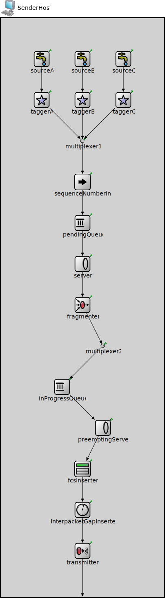

Package: inet.tutorials.protocol
SenderHost
compound module(no description)
Usage diagram
The following diagram shows usage relationships between types. Unresolved types are missing from the diagram.
Used in
| Name | Type | Description |
|---|---|---|
| Network90 | network | (no description) |
Properties
| Name | Value | Description |
|---|---|---|
| networkNode | ||
| display | i=device/pc |
Gates
| Name | Direction | Size | Description |
|---|---|---|---|
| g | output |
Unassigned submodule parameters
| Name | Type | Default value | Description |
|---|---|---|---|
| sourceA.displayStringTextFormat | string | "created %p pk (%l)" |
determines the text that is written on top of the submodule |
| sourceA.packetNameFormat | string | "%a-%c" |
see directives in module documentation |
| sourceA.packetRepresentation | string | "byteCount" |
determines the chunk of the packet data |
| sourceA.packetLength | int | ||
| sourceA.packetData | int | -1 | |
| sourceA.attachCreationTimeTag | bool | true | |
| sourceA.attachIdentityTag | bool | true | |
| sourceA.attachDirectionTag | bool | true | |
| sourceA.clockModule | string | "" |
relative path of a module that implements IClock(1,2); optional |
| sourceA.initialProductionOffset | double | 0s | |
| sourceA.productionInterval | double |
elapsed time between subsequent packets pushed to the connected packet consumer |
|
| sourceA.scheduleForAbsoluteTime | bool | true |
when a clock is used relative means that setting the clock will not affect the simulation time of the event |
| taggerA.displayStringTextFormat | string | "tagged %p pk (%l)" |
determines the text that is written on top of the submodule |
| taggerA.dscp | int | -1 |
specifies differentiated services code point |
| taggerA.ecn | int | -1 |
specifies explicit congestion notification |
| taggerA.tos | int | -1 |
if not -1, set the Type Of Service (IPv4) / Traffic Class (IPv6) field of sent packets to this value |
| taggerA.interfaceName | string | "" |
specifies outgoing interface, unused by default |
| taggerA.hopLimit | int | -1 |
specifies network layer TTL, unused by default |
| taggerA.vlanId | int | -1 |
specifies VLAN, unused by default |
| taggerA.pcp | int | -1 |
specifies PCP, unused by default |
| taggerA.userPriority | int | -1 |
specifies user priority, unused by default |
| taggerA.transmissionPower | double | nan W |
specifies signal transmission power, unused by default |
| taggerA.filterClass | string | "inet::queueing::AnyPacketFilter" |
determines which packets are tagged |
| sourceB.displayStringTextFormat | string | "created %p pk (%l)" |
determines the text that is written on top of the submodule |
| sourceB.packetNameFormat | string | "%a-%c" |
see directives in module documentation |
| sourceB.packetRepresentation | string | "byteCount" |
determines the chunk of the packet data |
| sourceB.packetLength | int | ||
| sourceB.packetData | int | -1 | |
| sourceB.attachCreationTimeTag | bool | true | |
| sourceB.attachIdentityTag | bool | true | |
| sourceB.attachDirectionTag | bool | true | |
| sourceB.clockModule | string | "" |
relative path of a module that implements IClock(1,2); optional |
| sourceB.initialProductionOffset | double | 0s | |
| sourceB.productionInterval | double |
elapsed time between subsequent packets pushed to the connected packet consumer |
|
| sourceB.scheduleForAbsoluteTime | bool | true |
when a clock is used relative means that setting the clock will not affect the simulation time of the event |
| taggerB.displayStringTextFormat | string | "tagged %p pk (%l)" |
determines the text that is written on top of the submodule |
| taggerB.dscp | int | -1 |
specifies differentiated services code point |
| taggerB.ecn | int | -1 |
specifies explicit congestion notification |
| taggerB.tos | int | -1 |
if not -1, set the Type Of Service (IPv4) / Traffic Class (IPv6) field of sent packets to this value |
| taggerB.interfaceName | string | "" |
specifies outgoing interface, unused by default |
| taggerB.hopLimit | int | -1 |
specifies network layer TTL, unused by default |
| taggerB.vlanId | int | -1 |
specifies VLAN, unused by default |
| taggerB.pcp | int | -1 |
specifies PCP, unused by default |
| taggerB.userPriority | int | -1 |
specifies user priority, unused by default |
| taggerB.transmissionPower | double | nan W |
specifies signal transmission power, unused by default |
| taggerB.filterClass | string | "inet::queueing::AnyPacketFilter" |
determines which packets are tagged |
| sourceC.displayStringTextFormat | string | "created %p pk (%l)" |
determines the text that is written on top of the submodule |
| sourceC.packetNameFormat | string | "%a-%c" |
see directives in module documentation |
| sourceC.packetRepresentation | string | "byteCount" |
determines the chunk of the packet data |
| sourceC.packetLength | int | ||
| sourceC.packetData | int | -1 | |
| sourceC.attachCreationTimeTag | bool | true | |
| sourceC.attachIdentityTag | bool | true | |
| sourceC.attachDirectionTag | bool | true | |
| sourceC.clockModule | string | "" |
relative path of a module that implements IClock(1,2); optional |
| sourceC.initialProductionOffset | double | 0s | |
| sourceC.productionInterval | double |
elapsed time between subsequent packets pushed to the connected packet consumer |
|
| sourceC.scheduleForAbsoluteTime | bool | true |
when a clock is used relative means that setting the clock will not affect the simulation time of the event |
| taggerC.displayStringTextFormat | string | "tagged %p pk (%l)" |
determines the text that is written on top of the submodule |
| taggerC.dscp | int | -1 |
specifies differentiated services code point |
| taggerC.ecn | int | -1 |
specifies explicit congestion notification |
| taggerC.tos | int | -1 |
if not -1, set the Type Of Service (IPv4) / Traffic Class (IPv6) field of sent packets to this value |
| taggerC.interfaceName | string | "" |
specifies outgoing interface, unused by default |
| taggerC.hopLimit | int | -1 |
specifies network layer TTL, unused by default |
| taggerC.vlanId | int | -1 |
specifies VLAN, unused by default |
| taggerC.pcp | int | -1 |
specifies PCP, unused by default |
| taggerC.userPriority | int | -1 |
specifies user priority, unused by default |
| taggerC.transmissionPower | double | nan W |
specifies signal transmission power, unused by default |
| taggerC.filterClass | string | "inet::queueing::AnyPacketFilter" |
determines which packets are tagged |
| multiplexer1.displayStringTextFormat | string | "passed %p pk (%l)" |
determines the text that is written on top of the submodule |
| multiplexer1.forwardServiceRegistration | bool | true | |
| multiplexer1.forwardProtocolRegistration | bool | true | |
| sequenceNumbering.displayStringTextFormat | string | "processed %p pk (%l)" |
determines the text that is written on top of the submodule |
| pendingQueue.displayStringTextFormat | string | "contains %p pk (%l) pushed %u\npulled %o removed %r dropped %d" |
determines the text that is written on top of the submodule |
| pendingQueue.packetCapacity | int | -1 |
maximum number of packets in the queue, no limit by default |
| pendingQueue.dataCapacity | int | -1b |
maximum total length of packets in the queue, no limit by default |
| pendingQueue.dropperClass | string | "" |
determines which packets are dropped when the queue is overloaded, packets are not dropped by default; the parameter must be the name of a C++ class which implements the IPacketDropperFunction C++ interface and is registered via Register_Class |
| pendingQueue.comparatorClass | string | "" |
determines the order of packets in the queue, insertion order by default; the parameter must be the name of a C++ class which implements the IPacketComparatorFunction C++ interface and is registered via Register_Class |
| pendingQueue.bufferModule | string | "" |
relative module path to the IPacketBuffer module used by this queue, implicit buffer by default |
| server.displayStringTextFormat | string | "served %p pk (%l)" |
determines the text that is written on top of the submodule |
| fragmenter.displayStringTextFormat | string | "processed %p pk (%l)" |
determines the text that is written on top of the submodule |
| fragmenter.deleteSelf | bool | false | |
| fragmenter.headerPosition | string | "front" | |
| multiplexer2.displayStringTextFormat | string | "passed %p pk (%l)" |
determines the text that is written on top of the submodule |
| multiplexer2.forwardServiceRegistration | bool | true | |
| multiplexer2.forwardProtocolRegistration | bool | true | |
| inProgressQueue.displayStringTextFormat | string | "contains %p pk (%l) pushed %u\npulled %o removed %r dropped %d" |
determines the text that is written on top of the submodule |
| inProgressQueue.packetCapacity | int | -1 |
maximum number of packets in the queue, no limit by default |
| inProgressQueue.dataCapacity | int | -1b |
maximum total length of packets in the queue, no limit by default |
| inProgressQueue.dropperClass | string | "" |
determines which packets are dropped when the queue is overloaded, packets are not dropped by default; the parameter must be the name of a C++ class which implements the IPacketDropperFunction C++ interface and is registered via Register_Class |
| inProgressQueue.comparatorClass | string | "" |
determines the order of packets in the queue, insertion order by default; the parameter must be the name of a C++ class which implements the IPacketComparatorFunction C++ interface and is registered via Register_Class |
| inProgressQueue.bufferModule | string | "" |
relative module path to the IPacketBuffer module used by this queue, implicit buffer by default |
| preemptingServer.displayStringTextFormat | string | "served %p pk (%l)" |
determines the text that is written on top of the submodule |
| preemptingServer.clockModule | string | "" |
relative path of a module that implements IClock(1,2); optional |
| preemptingServer.datarate | double | ||
| fcsInserter.displayStringTextFormat | string | "processed %p pk (%l)" |
determines the text that is written on top of the submodule |
| fcsInserter.fcsMode | string | "declared" | |
| fcsInserter.headerPosition | string | "back" | |
| InterpacketGapInserter.displayStringTextFormat | string | "delayed %p pk (%l)\nifg: %g" |
determines the text that is written on top of the submodule |
| InterpacketGapInserter.clockModule | string | "" |
relative path of a module that implements IClock(1,2); optional |
| InterpacketGapInserter.initialChannelBusy | bool | false |
assume that channel was busy before the simulation started |
| InterpacketGapInserter.duration | double | ||
| transmitter.displayStringTextFormat | string | "processed %p pk (%l)" |
determines the text that is written on top of the submodule |
| transmitter.clockModule | string | "" |
relative path of a module that implements IClock(1,2); optional |
| transmitter.datarate | double |
Source code
module SenderHost { parameters: @networkNode; @display("i=device/pc"); gates: output g; submodules: sourceA: ActivePacketSource { @display("p=100,100"); } taggerA: PacketTagger { @display("p=100,200"); } sourceB: ActivePacketSource { @display("p=200,100"); } taggerB: PacketTagger { @display("p=200,200"); } sourceC: ActivePacketSource { @display("p=300,100"); } taggerC: PacketTagger { @display("p=300,200"); } multiplexer1: PacketMultiplexer { @display("p=200,300"); } sequenceNumbering: SequenceNumbering { @display("p=200,400"); } pendingQueue: PacketQueue { @display("p=200,500"); } server: InstantServer { @display("p=200,600"); } fragmenter: FragmentNumberHeaderBasedDefragmenter { @display("p=200,700"); } multiplexer2: PacketMultiplexer { @display("p=250,800"); } inProgressQueue: InProgressQueue { @display("p=150,900"); } preemptingServer: PreemptingServer { @display("p=250,1000"); } fcsInserter: FcsHeaderInserter { @display("p=200,1100"); } InterpacketGapInserter: InterpacketGapInserter { @display("p=200,1200"); } transmitter: StreamThroughTransmitter { @display("p=200,1300"); } connections: sourceA.out --> taggerA.in; sourceB.out --> taggerB.in; sourceC.out --> taggerC.in; taggerA.out --> multiplexer1.in++; taggerB.out --> multiplexer1.in++; taggerC.out --> multiplexer1.in++; multiplexer1.out --> sequenceNumbering.in; sequenceNumbering.out --> pendingQueue.in; pendingQueue.out --> server.in; server.out --> fragmenter.in; fragmenter.out --> multiplexer2.in++; multiplexer2.out --> inProgressQueue.in; inProgressQueue.out --> preemptingServer.in; // TODO: preemptingServer.preemptedOut --> multiplexer2.in++; preemptingServer.out --> fcsInserter.in; fcsInserter.out --> InterpacketGapInserter.in; InterpacketGapInserter.out --> transmitter.in; transmitter.out --> g; }File: tutorials/protocol/Network90.ned
 This documentation is released under the Creative Commons license
This documentation is released under the Creative Commons license